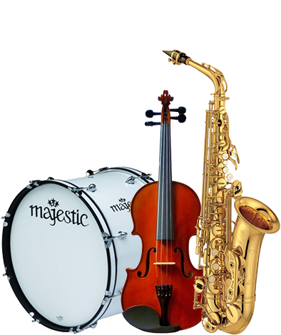
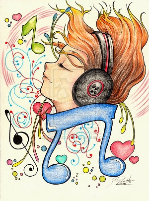

¿PORQUE NOS GUSTA LA MUSICA?
Si pensamos en los gustos musicales de las personas que conocemos, podremos observar varias cosas: que las preferencias por autores, épocas, géneros, intérpretes… son muy diferentes; que mientras unos están escuchando música a todas horas, otros prefieren hacerlo en momentos puntuales; para algunos la música es un entretenimiento más, para otros una pasión, algo imprescindible, para unos pocos una profesión, una vocación… Muchas y muy variadas opciones y solo una muy infrecuente, rara, casi desconocida ¿sabemos de alguien a quien no le guste nada la música, ningún tipo de música? En la cultura occidental, la atracción del ser humano hacia la música ha generado innumerables opiniones y estudios. Desde los realizados por conocidos filósofos en torno al sentido y la utilidad de la música como actividad artística, hasta concienzudas investigaciones neurocientíficas sobre cómo reacciona el cerebro a la audición musical. Todas han arrojado valiosos conocimientos sobre la relación de los hombres con el sonido y nos llevan a dos conclusiones:


¿PORQUE NOS GUSTA DIFERENTE TIPOS DE MUSICA?
Según nos indican varios estudios, a las personas nos gusta la música triste porque nos permite conectar con nuestras emociones y salir fortalecidos, relajados y animados tras escuchar determinadas canciones de este estilo La música es cultura, es placer y ese lenguaje capaz de estimular en la persona distintos tipos de estados ánimo. Para otros, es un reflejo de la personalidad de cada individuo. El género musical rompe con cualquier barrera cultural, económica, social y geográfica, respondiendo siempre a una inclinación subjetiva y sobre todo, emocional. Sabemos que la música es un tipo de código que embelesa nuestros sentidos desde la antigüedad. Sin embargo ¿por qué a menudo tenemos más inclinación por un tipo de música y no por otra? Esta pregunta también se la han hecho muy a menudo los neurocientíficos.- Ritmos Musicales
- Blues
- Corridos
- Merengue
- Electronica
- Flamenco
- Electronica
- Cumbia
- Ranchera
- Jazz
- Indice
- Hip Hop
- pop
- punk
- Rap
- Reggae
- Reggueton